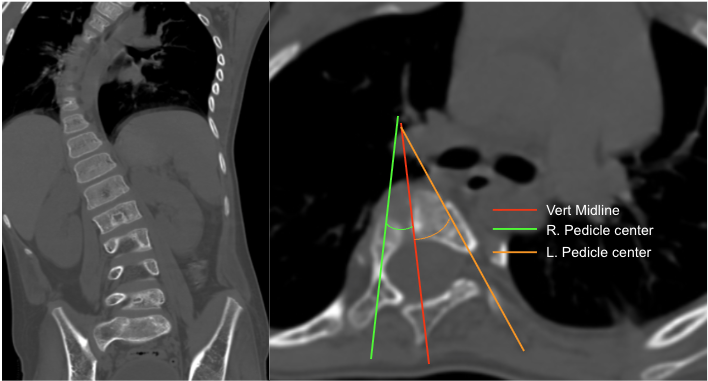

Adapted from: Thapa S, Juvenile idiopathic mid-thoracic scoliosis. Case study, Radiopaedia.org (Accessed on 05 Jan 2026) https://doi.org/10.53347/rID-41523
1) Description of Measurement
Axial rotation measurement using the pedicle asymmetry method estimates the degree of vertebral rotation in scoliosis by comparing the relative positions of the right and left pedicles on axial CT images. As the vertebral body rotates, the pedicle on the convex side migrates anteriorly toward the vertebral midline, while the concave pedicle shifts posteriorly, creating measurable asymmetry.
This technique is widely used for surgical planning and to assess progression of rotational deformity.
2) Instructions to Measure
Imaging Requirements
Step-by-Step
3) Normal vs. Pathologic Ranges
4) Important References
Aaro S, Dahlborn M. Estimation of vertebral rotation and the spinal and rib cage deformity in scoliosis by computer tomography. Spine (Phila Pa 1976). 1981 Sep-Oct;6(5):460-7. doi: 10.1097/00007632-198109000-00007.
Chi WM, Cheng CW, Yeh WC, et al. Vertebral axial rotation measurement method. Comput Methods Programs Biomed. 2006 Jan;81(1):8-17. doi: 10.1016/j.cmpb.2005.10.004. Epub 2005 Nov 21.
Abul-Kasim K, Karlsson MK, Hasserius R, Ohlin A. Measurement of vertebral rotation in adolescent idiopathic scoliosis with low-dose CT in prone position - method description and reliability analysis. Scoliosis. 2010 Feb 23;5:4. doi: 10.1186/1748-7161-5-4.
5) Other info....
CT-based methods are more accurate than plain radiograph-based Nash-Moe grading.
Rotation correlates with rib hump deformity and cosmetic severity.
Axial rotation should be interpreted with Cobb angle, curve flexibility, and sagittal alignment for operative planning.
Consistent slice selection at the pedicle level is critical for reproducibility.